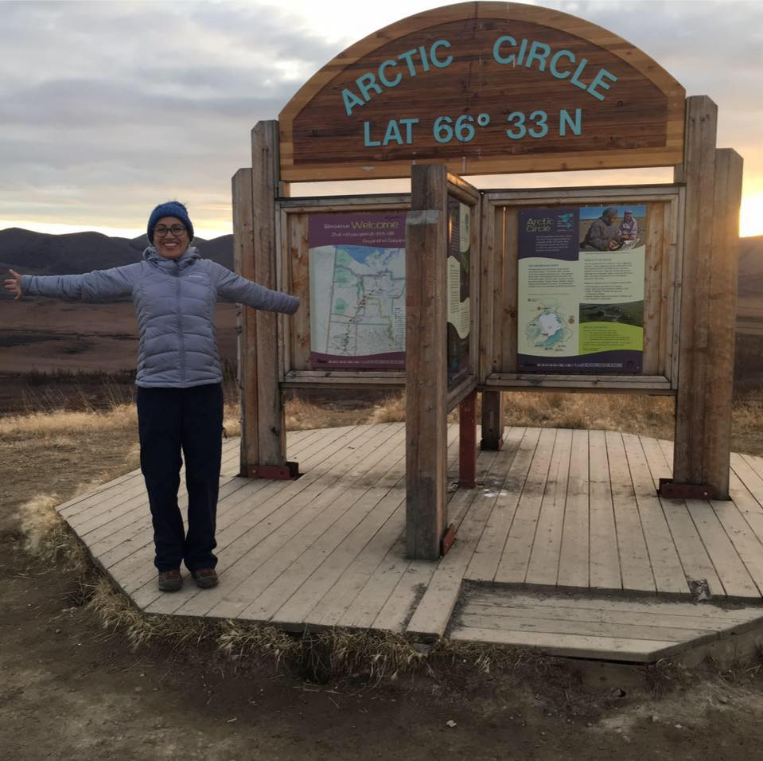
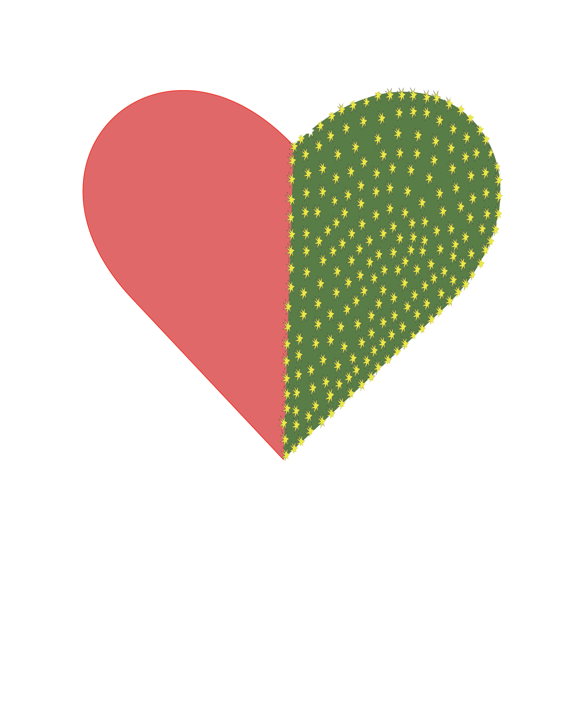

Jaqueline A. Nájera Granados
Front End Devoloper
Who I am
I am an immigrant from Mexico City. I have been in Canada since 2014, and this  past September marked five years that I have been been in Vancouver, British Columbia.
I have a degree in Sociology from the 'Autonomous National University of Mexico' (UNAM). After I finished university, I moved to Canada for personal reasons.
When I arrived in Vancouver, I did not know what to do for work. My opportunities were limited, so I decided to become a student at Lighthouse Lab. Although, there are barriers of the language, I want to become a Front End Deveoper because is a profession in which I can use my knowledge of Spanish in my advantage as it is the third most used language on the Internet.
More About Me
Designs
Gallery

Animate